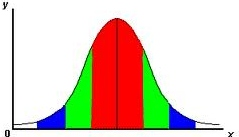
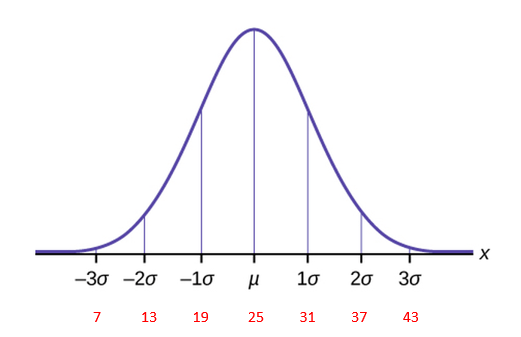
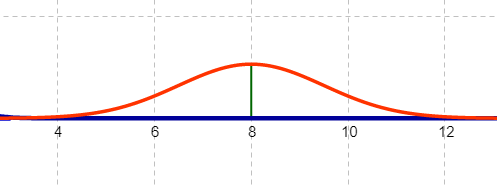
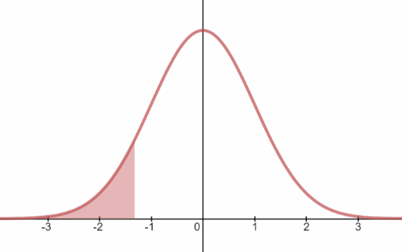
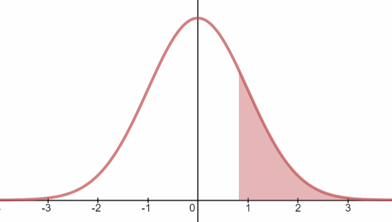
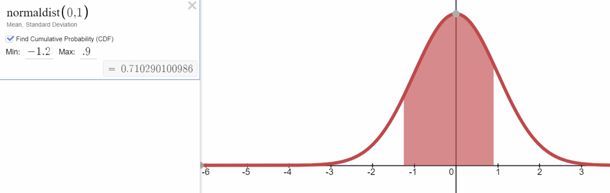

Unit 3 Normal Distributions and Confidence Intervals
5.1 Introduction to Normal Distributions and the Standard Normal Distribution
Overview of the Chapter
“If a variable can take on any value between two specified values, it is called a continuous variable; otherwise, it is called a discrete variable. Some examples will clarify the difference between discrete and continuous variables.
- Suppose the fire department mandates that all fire fighters must weigh between 150 and 250 pounds. The weight of a fire fighter would be an example of a continuous variable; since a fire fighter's weight could take on any value between 150 and 250 pounds.
- Suppose we flip a coin and count the number of heads. The number of heads could be any integer value between 0 and infinity. However, it could not be any number between 0 and infinity. We could not, for example, get 2.5 heads. Therefore, the number of heads must be a discrete variable.
Just like variables, probability distributions can be classified as discrete or continuous. A continuous probability distribution differs from a discrete probability distribution in several ways.
- The probability that a continuous random variable will assume a particular value is zero.
- As a result, a continuous probability distribution cannot be expressed in tabular form.
- Instead, an equation or formula is used to describe a continuous probability distribution.
Most often, the equation used to describe a continuous probability distribution is called a probability density function. Sometimes, it is referred to as a density function, a PDF, or a pdf. For a continuous probability distribution, the density function has the following properties:
- Since the continuous random variable is defined over a continuous range of values (called the domain of the variable), the graph of the density function will also be continuous over that range.
- The area bounded by the curve of the density function and the x-axis is equal to 1, when computed over the domain of the variable.
- The probability that a random variable assumes a value between a and b is equal to the area under the density function bounded by a and b.”
Stattrek.com
Three Normal Distributions We Will Use in this Chapter
Standard Normal Bell Curve: a distribution of z-scores
\(\sim \mathbf{N}(\mathbf{0}, \mathbf{1})\)
This is a standardized normal bell curve and is a distribution of z scores. The distribution of z-scores always has the same mean and standard deviation.

Normal Bell Curve: a distribution of individual values
\(\sim \mathbf{N}(\mu, \sigma) \quad z=\frac{x-\mu}{\sigma}\)
This is a normal bell curve and is a distribution of individual x values which are measures for each member of the population. The mean and standard deviation will vary for each population.
Central Limit Theorem Normal Bell Curve: a distribution of sample means
\(\sim \mathbf{N}\left(\mu, \frac{\sigma}{\sqrt{n}}\right) \quad z_{x}=\frac{\overline{x}-\mu}{\left(\frac{\sigma}{\sqrt{n}}\right)}\)

Requirements for CLT:
Sample is from normally distributed population OR Sample size is greater than 30 ( n > 30 )
Properties of a Normal Distribution
In this chapter, you will begin to study the most important continuous probability distribution in statistics: The Normal Distribution. In the previous chapter, discrete distributions could be graphed with a histogram. For continuous probability distributions, we will use a probability density function.
Probability density curve for a normal distribution:
- The mean, median and mode are equal.
- The normal curve is bell shaped and is symmetric about the mean.
- The total area underneath the curve is equal to 1.
- The normal curve approaches, but never touches, the x-axis as it extends away from the mean.
- Between z=-1 and z=1, the graph curves downward. Everywhere else, the graph curves upward.
Empirical Rule Review
- If the mean wait time to have your oil changed is 25 and the standard deviation is 6 min, estimate the probability of randomly selecting a customer with a wait time between 7 and 19 minutes. Label the curve with x values, z scores, and estimated probabilities.

\(P(7 \leq x \leq 19)=2.35+13.5=15.85 \%\)
- z-score Review: Calculate the z scores for the following wait times:
- 22 minutes
\(z=\frac{22-25}{6}=\frac{-3}{6}=-0.5\) - 40 minutes
\(z=\frac{40-25}{6}=\frac{1.5}{6}=2.5\)
- 22 minutes
- ACT scores for high school seniors at a large school district are normally distributed with a mean of 22 and a standard deviation of 4. Compare the two distribution curves given below.
Description of Curve A: Every student is represented on the curve as an individual and the entire population is represented.
Description of Curve B: Groups of 25 students are randomly selected from the population and the mean ACT of each group is represented on the curve.
![Curve A and Curve B are both normal curves. The horizontal axis represents the ACT scores and is numbered from 0 to 40, counting by 10. The vertical axis represents the number of students who earned each of the possible ACT scores. Curve A represents the graph of every student in the population and it is wide and short. It goeas from 10 to 36 with a mean of 22. Curve B represents the mean ACT score for each of the groups of 25 students. It is tal and narrow. It goes from about 18 to about 24, with a mean of 22.](images/u3s1p3.png)
- Identify the mean of Curve A and the mean of Curve B. What do you notice?
\(\mu_{A}=22\)
\(\mu_{B}=22\)
Both curves have the same mean.
- Identify the standard deviation of Curve A and Curve B. What do you notice?
\(\sigma_{A}=4\)
\(\sigma_{B}<4\)
The standard deviation for the distribution of sample means is less than the standard deviation of the population the samples were selected from.
- Give an explanation for your observations in the previous two questions.
The means are the same in the two curves because the mean of each sample will be close to the mean of the population. The standard deviation for the distribution of sample means is less than the distribution of the population because an extreme value randomly selected from one of the tails of the population curve is averaged together with 24 other values to produce the mean of the sample. Each sample mean will be close to the population mean and so the spread of sample means is less than the spread of individuals.
- Identify the mean of Curve A and the mean of Curve B. What do you notice?
- Estimate the standard deviation of the distribution:

\(\sigma \approx 0.5\)
\(\sigma \approx 1.5\)
- If z = -1.32, what is area to the left of the z score?
Mathematical Translation: \(P(z \lt-1.32)=\)
0.0934175089935 
- If z = 0.82, what is area to the right of the z score?
Mathematical Translation: \(P(z>0.82)=\)
0.20610805 
- If z = -2.17, what is area to the right of the z score?
Mathematical Translation: \(P(z>-2.17)=\)
0.98499658 - If \(z_1 = -1.25\) and \(z_2 = 0.9\), what is area between the two z scores?
Mathematical Translation: \(P(-1.25\lt z \lt 0.9)=\)
0.7102901 
Interpreting the Graphs of Normal Curves
Estimating standard deviation based on the point of inflection:
Calculating the area under the curve:
The Empirical Rule is an estimate of probability and is limited to questions involving values with z scores of whole numbers. We need to use technology to accurately calculate probabilities (areas) for other z-scores.